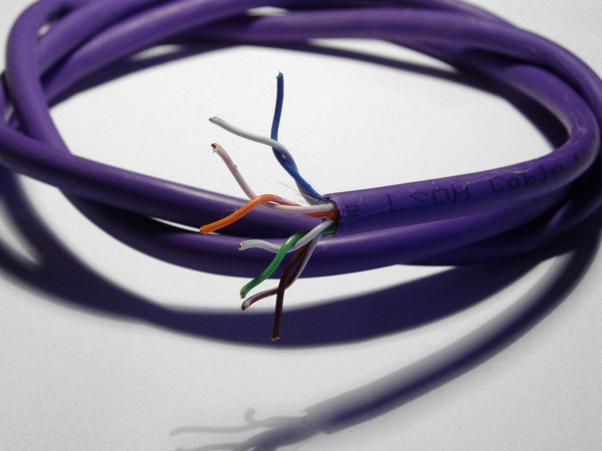

한 번만, 자신의 말로 설명해 보세요.
AP A에서 Switch B까지 실제로 어떤 케이블과 장비를 거쳐 연결되는지 자신의 말로 설명해보세요.
0단계 첫 주제 · 1단계 · 개념 학습 · 약 5~8분
AP와 네트워크 장비가 UTP·광케이블·SFP를 통해 어떻게 연결되는지 설명할 수 있다.
처음 배우는 분을 위한 페이지입니다. 이름보다 “무엇과 무엇을 잇는가”를 먼저 보세요.
00 · 30초 핵심 요약
네트워크 통신은 IP 주소부터 시작하는 것이 아닙니다. 먼저 장비들이 UTP 또는 광케이블 같은 물리 매체로 실제 연결되어 있어야 합니다. 물리 매체는 데이터가 지나는 실제 통로입니다.
01 · 왜 필요한가
휴대폰은 무선으로 AP(Access Point)에 접속합니다. 하지만 AP가 상위 네트워크로 데이터를 전달하려면 그 뒤의 유선 연결도 필요합니다. AP 한 대의 선과 여러 AP가 함께 쓰는 상위 연결을 구분하면 어디가 끊겼을 때 어느 범위가 영향을 받는지 이해할 수 있습니다.
02 · 핵심 연결 구조
AP A → UTP → Switch A → SFP A → Fiber → FDF A → Fiber → SFP B → Switch B. Switch A는 AP를 연결하는 스위치이고, 마지막 장비인 Switch B는 여러 연결을 모아 더 넓은 네트워크로 이어주는 상위 스위치입니다.
03 · UTP · 가장 먼저 만나는 케이블
UTP(Unshielded Twisted Pair)는 구리선 쌍을 꼬아 만든, 차폐층이 없는 케이블입니다. AP·PC와 스위치를 연결하는 대표적인 구리(Copper) 케이블로, 전기 신호로 데이터를 전달합니다.
작은 걸쇠가 있고 장비의 LAN 포트에 꽂습니다. 케이블 전체의 이름인 UTP와 끝부분의 연결 형태인 RJ45를 구분하세요.
케이블 겉면에서 볼 수 있는 성능 분류 이름입니다. Cat5e와 Cat6는 일반적인 1G Ethernet 연결에 쓰이고, Cat6A는 10G 연결을 위한 배선에도 쓰입니다. 1G·10G는 데이터 전달 속도의 크기를 나타냅니다.
이름만으로 실제 속도가 결정되지는 않습니다. 연결하는 양쪽 장비, 배선 길이·품질 등 조건도 맞아야 합니다. 지금은 상세 속도·거리표를 외우지 않아도 됩니다.
케이블을 교체하거나 끝부분을 다시 연결할 때는 안쪽 구조도 알아두면 도움이 됩니다. 사진에서 바깥 피복과 그 안의 가느다란 선을 구분해 보세요.

2가닥씩 × 4쌍 = 8가닥
쌍은 색으로 구분합니다. 주황·초록·파랑·갈색 선이 각각 같은 색 줄무늬가 있는 흰색 선과 짝을 이룹니다. 눈에 보이는 색 부분은 구리 자체가 아니라 심선의 절연 피복입니다.
‘흰색/주황’은 흰 바탕에 주황 줄무늬가 있는 선이라는 뜻입니다. 위 목록은 쌍의 구성으로, RJ45 플러그에 꽂는 핀 순서가 아닙니다.
왜 꼬아 놓을까요? 선 사이의 신호 간섭을 줄이기 위한 구조입니다. 따라서 끝부분을 다시 연결할 때도 꼬임을 필요 이상으로 많이 풀지 않는 것이 중요합니다.
PoE(Power over Ethernet)를 지원하는 환경에서는 스위치가 같은 구리 케이블로 AP에 전원도 보낼 수 있습니다. PoE는 케이블만 바꾸면 자동으로 생기는 기능이 아닙니다. 전원을 주는 장비와 받는 AP가 이를 지원해야 합니다.
현재 운영 중인 사업장의 우리 담당 파트에서는 Cat5e UTP 케이블을 실제로 사용하고 있습니다.
이 설명은 우리가 담당하는 범위에 한정됩니다. 다른 파트의 케이블 사용 현황은 정확히 알지 못하므로, 사업장 전체가 Cat5e를 사용한다는 의미는 아닙니다.
Cat5e는 과거에만 사용하던 케이블이 아닙니다. Cat5e = 오래된 케이블 = 장애라고 단순하게 판단해서는 안 됩니다.
케이블 이름에서 단정하지 않고 상태를 함께 본다는 사고 순서입니다. 상세 장애 조치 절차는 다루지 않습니다.
04 · 광케이블
Fiber(광케이블)는 빛을 이용해 데이터를 전달하는 매체입니다. UTP와 물리적으로 다른 통로이며, 스위치 사이의 연결에 자주 사용됩니다.
큰 구분으로 Multimode(멀티모드)와 Single-mode(싱글모드)가 있습니다. 빛이 전달되는 방식이 다르며, 사용할 광모듈과 맞아야 합니다. 지금은 두 종류가 있다는 점과 서로 맞춰 사용한다는 점만 기억하세요.
네. 다만 선의 겉피복 색상과 끝부분 커넥터의 색상은 구분해서 봐야 합니다. 아래는 장비와 패널을 잇는 광 패치코드(양 끝에 연결부가 달린 광케이블)의 대표적인 겉피복 색상입니다.
| 겉피복 색상 | 흔히 나타내는 광섬유 종류 |
|---|---|
| 노랑 | 싱글모드 OS1 · OS2 |
| 주황 | 멀티모드 OM1 · OM2 |
| 아쿠아(청록) | 멀티모드 OM3 · OM4 |
| 보라 | 멀티모드 OM4에 쓰이기도 함 |
| 연두(Lime Green) | 멀티모드 OM5 |
OS는 싱글모드, OM은 멀티모드의 분류 표기입니다. 지금은 세부 규격을 외우기보다 케이블 겉면의 표기를 찾아보는 데 활용하세요. 위 색상 견본은 이해를 돕기 위한 예시입니다.
색상은 첫 단서이고, 규격 표기로 확인합니다. 주황색만으로 OM1과 OM2를, 아쿠아색만으로 OM3과 OM4를 구분할 수 없습니다. OM4는 보라색뿐 아니라 아쿠아색 제품도 있습니다.
제조사·현장 규칙에 따라 다른 색상을 쓰기도 하며, 옥외 케이블은 검정색인 경우가 많습니다. 교체할 때는 겉피복의 OS2·OM3·OM4 같은 인쇄, 제품 라벨, 연결할 광모듈의 지원 규격을 함께 확인하세요.
일반적인 싱글모드 커넥터에서는 파랑은 UPC, 초록은 APC를 구분하는 단서입니다. 이는 광섬유 끝면을 다듬는 방식의 차이이며, 위 표의 겉피복 색상과는 별개입니다.
UPC와 APC의 끝면을 서로 직접 맞물려 연결하면 안 됩니다. 접속 품질이 나빠지거나 끝면이 손상될 수 있습니다. 케이블 겉피복이 같은 노란색이어도 커넥터 사양까지 확인해야 합니다.
한 케이블의 양 끝이 UPC와 APC로 다른 제품도 있습니다. 금지하는 것은 케이블 양 끝의 조합이 아니라, 서로 맞닿는 접속면의 혼용입니다.
참고로 케이블 내부의 여러 광섬유에 칠해진 색은 각 가닥을 식별하는 표시입니다. 위의 겉피복 색상표와는 다른 기준입니다.
건물의 광 배선은 이런 연결 지점을 거쳐 이어질 수 있습니다. 그림 속 FDF는 데이터의 목적지를 판단하는 스위치가 아닙니다.
05 · 광 SFP
광 SFP는 네트워크 장비와 광케이블 사이에서 광 신호를 송수신하는 송수신(Transceiver) 모듈입니다. 케이블도, 스위치 전체도 아닙니다. 여기서는 광 SFP를 중심으로 설명합니다.
모든 SFP가 같은 것은 아닙니다. 장비·속도·사용할 광 방식에 맞는 모듈이 필요합니다. Ethernet에서 흔한 예로 1G에는 SFP, 10G에는 SFP+를 접합니다. 비슷한 작은 외형이어도 지원 규격이 다르므로, 꽂힌다는 이유만으로 호환을 보장하지 않습니다.
현장에서는 SFP 계열 광모듈을 관습적으로 ‘지빅’이라고 부르는 경우가 있습니다. 정확한 장비 명칭이 필요할 때 이 자료는 SFP 또는 광 송수신 모듈로 표기합니다. GBIC와 SFP는 동일한 물리적 형태가 아닙니다.
SFP만 꽂혀 있어도 케이블이 빠져 있으면 이 광 연결은 완성되지 않습니다. 반대로 상위 연결이 끊겼다고 스위치 자체의 전원까지 꺼지는 것은 아닙니다.
06 · 헷갈리기 쉬운 비교
| 항목 | 초급 핵심 개념 |
|---|---|
| UTP | AP·PC와 스위치 등을 연결하는 구리 케이블 |
| Fiber | 빛을 이용해 장비 사이에서 데이터를 전달하는 광케이블 |
| SFP | 스위치와 광케이블 사이의 광 송수신 모듈 |
| FDF | 광케이블을 정리하고 연결하는 중간 지점 |
07 · 꼭 기억하기
08 · 내 말로 설명하기
AP A에서 Switch B까지 실제로 어떤 케이블과 장비를 거쳐 연결되는지 자신의 말로 설명해보세요.
2단계 · 실습
예상 → 조작 → 관찰 → 설명으로 같은 연결 구조를 확인합니다.
명칭 기준 · 개념 학습과 실습 모두 AP A·AP B, Switch A·Switch B를 같은 이름으로 사용합니다. SFP A·B는 각각 Switch A·B 쪽 모듈이고 FDF A는 중간 광 연결 지점입니다.
공식 표준·제조사 문서를 근거로 만든 초급 설명입니다. 대표 배선과 영향 범위는 학습용 단순화이며 특정 환경을 측정한 결과가 아닙니다. 이번 주제는 공식 문서 검토와 브라우저 학습 모델 검증만 수행했으며 실물·PNETLab 검증은 수행하지 않았습니다.